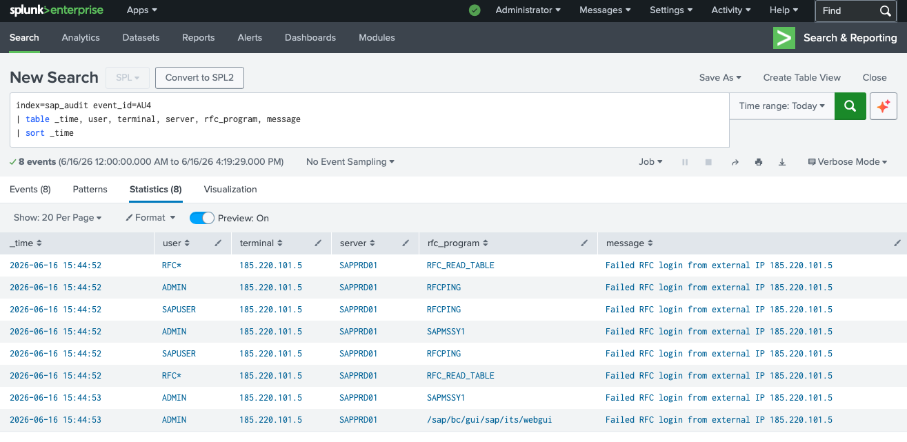

Die SAP RFC-Schnittstelle als Angriffsfläche
Das Remote Function Call (RFC)-Protokoll ist die Kernkommunikationsschnittstelle in SAP-Landschaften. Über RFC kommunizieren SAP-Systeme untereinander, externe Anwendungen greifen auf SAP-Daten zu, und Integrationsplattformen übertragen Geschäftsdaten.
Genau deshalb ist RFC auch ein bevorzugtes Angriffsziel: Ein Angreifer, der sich erfolgreich
über RFC authentifiziert, hat direkten Zugang zu Funktionsbausteinen wie
RFC_READ_TABLE
— und kann damit beliebige SAP-Tabellen auslesen, ohne die SAP-GUI zu öffnen.
Angreifer-IP 185.220.101.5 ist ein bekannter Tor-Exit-Node. Der Angreifer verschleiert seinen echten Standort über das Tor-Netzwerk — ein starkes Indiz für einen gezielten, professionellen Angriff.
Angriffs-Fingerabdruck — Was wurde getestet?
Die Kombination aus Benutzernamen und RFC-Programmen ist kein Zufall — sie entspricht exakt den Default-Konfigurationen spezialisierter SAP-Angriffs-Tools wie SAP RFC Scanner oder Bizploit:
| RFC-PROGRAMM | ZWECK DES ANGREIFERS | RISIKO BEI ERFOLG |
|---|---|---|
| RFC_READ_TABLE | Beliebige SAP-Tabellen auslesen | KRITISCH — vollständige Datenexfiltration |
| RFCPING | Konnektivität testen, System-Info erhalten | MITTEL — Reconnaissance, System-Fingerprinting |
| SAPMSSY1 | System-Informationen abrufen | MITTEL — SAP-Version, Patch-Level ermitteln |
| /sap/bc/gui/sap/its/webgui | SAP Web GUI Zugang | HOCH — Browser-basierter SAP-Zugang ohne SAP GUI |
RFC_READ_TABLE ist der gefährlichste Funktionsbaustein in dieser Liste.
Mit einem einzigen RFC-Aufruf kann ein Angreifer die gesamte Tabelle
USR02 (Passwort-Hashes aller SAP-Benutzer) oder
PA0002 (HR-Stammdaten aller Mitarbeiter) extrahieren —
ohne eine einzige SAP-Transaktion zu öffnen.
Erkennung — Splunk SPL-Query
Fehlgeschlagene RFC-Logins von externer IP

Abb. 1 — 8 fehlgeschlagene RFC-Login-Versuche von 185.220.101.5 gegen SAPPRD01 — Benutzer RFC*, ADMIN, SAPUSER — Programme RFC_READ_TABLE, RFCPING, SAPMSSY1, /sap/bc/gui/sap/its/webgui
Alle 8 Events kommen von derselben externen IP, treffen denselben Server und verwenden eine systematische Kombination aus Standard-Benutzernamen und bekannten RFC-Programmen. Das ist kein manueller Test — das ist ein automatisiertes Scan-Tool.
Wichtige Erkenntnisse
Der SAP Message Server (Port 3600) und der Application Server (Port 33xx) dürfen niemals direkt aus dem Internet erreichbar sein. Hier ist das offensichtlich der Fall — ein kritischer Konfigurationsfehler.
Die Kombination RFC_READ_TABLE + RFCPING + SAPMSSY1 ist das typische Scan-Muster von Tools wie Bizploit oder metasploit-SAP-Modulen. Der Angreifer verfügt über SAP-spezifisches Fachwissen.
Der Angreifer testet RFC*, ADMIN und SAPUSER — SAP-Standard-Benutzernamen. Wenn diese Konten noch existieren und aktiv sind, ist ein erfolgreicher Login bei einem weiteren Versuch realistisch.
AU4-Events sind in normalen SAP-Betrieb selten — RFC-Authentifizierungsfehler von externen IPs sollten in Echtzeit alarmieren. Kein False-Positive-Risiko bei externer Quell-IP.
Empfehlungen
SAP-Ports (3200-3299, 3600-3699, 4800) dürfen nicht aus dem Internet erreichbar sein. Firewall-Regeln prüfen und korrigieren — RFC-Zugang nur über VPN oder SAP Cloud Connector.
RFC*, ADMIN, SAPUSER, SAP*, DDIC — alle nicht benötigten Standard-User sofort sperren. Diese Benutzernamen sind in jedem SAP-Angriffs-Tool hardcodiert.
Den Zugriff auf RFC_READ_TABLE über Berechtigungsobjekt S_RFC auf autorisierte RFC-Benutzer beschränken. Alternativ: Tabellenpuffer und alternative Schnittstellen nutzen.
Bekannter Tor-Exit-Node — auf Firewall- und WAF-Ebene blockieren. Alle weiteren Aktivitäten dieser IP in allen Logs (Firewall, IDS, Web) prüfen.
Letzter Teil dieser Serie: Sensitive Tabellenzugriffe — ein interner Benutzer liest in kurzer Zeit mehrere hochsensible SAP-Tabellen (USR02, AGR_USERS) mit tausenden Datensätzen. EU1-Analyse als Datenexfiltrations-Indikator.